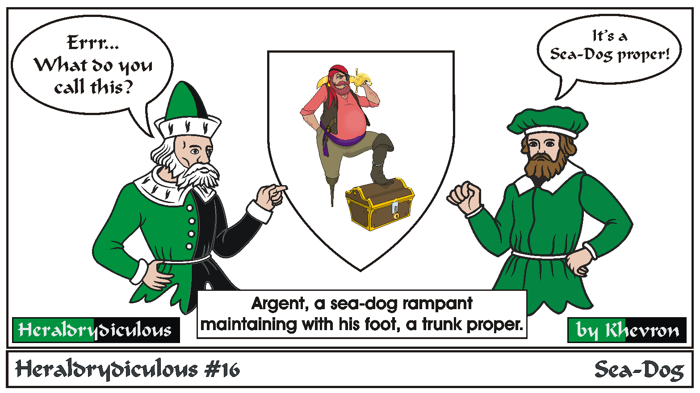

Bad style: Making your design too naturalistic or realistic. Heraldic design is supposed to be recognizable from a distance - Blue horses and red lions aren't realistic, but they're good heraldry. Too much detail or small maintained thingies are not good style.
Back to Khevron's Heraldry Page